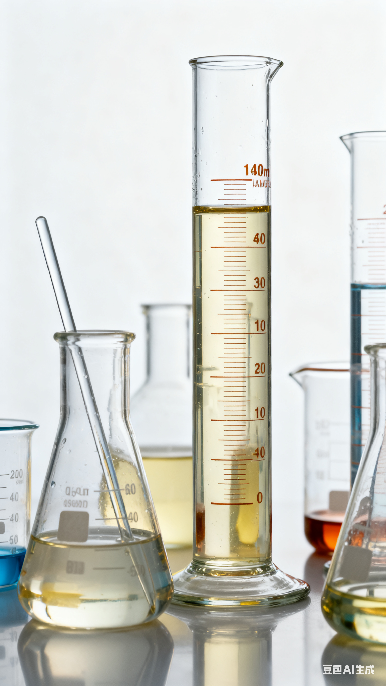

YourContributionKeywords
×
Click anywhere to continue

of chemicalpesticide residuesreduction
By choosing organic food, you contribute to reducing harmful chemical pesticides. That’s equivalent to avoiding a drop of chemical concentrate that could contaminate several liters of water. Organic farming reduces pesticide use by up to 80%, helping protect biodiversity and human health.
Click anywhere to continue